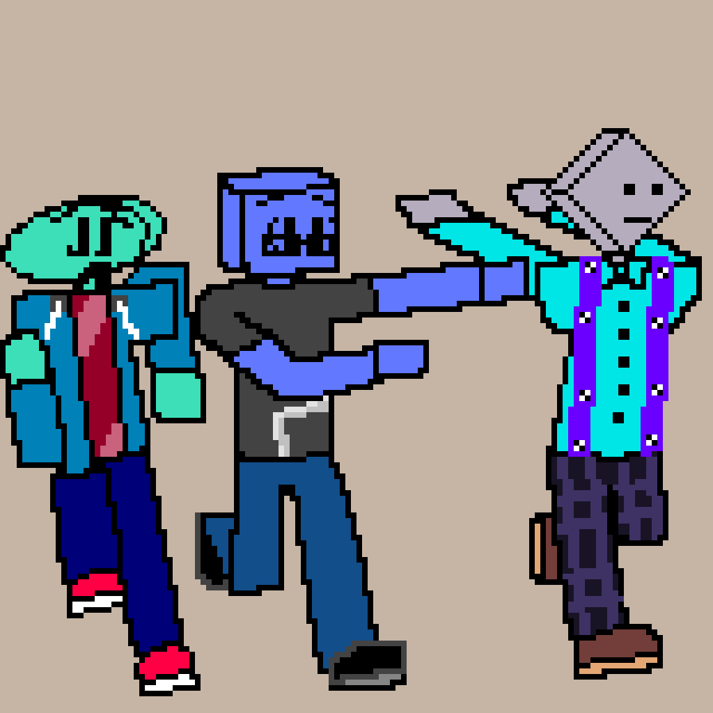
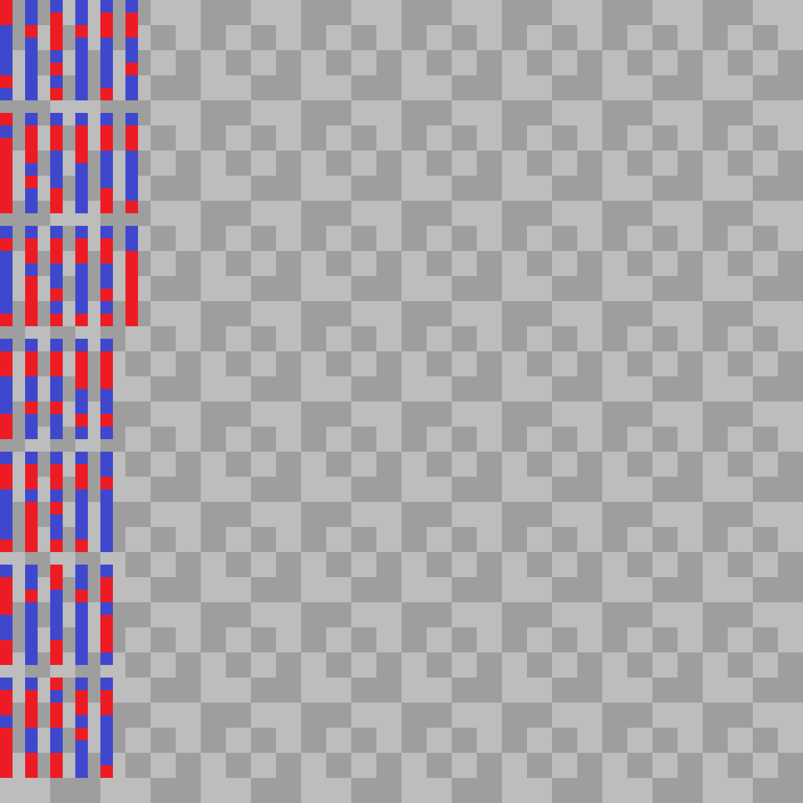

Hola. Mi pseudónimo en línea Ferric Acid. Me gustan las matemáticas y la investigación, al igual que los videojuegos y el dibujo (pero no soy muy bueno)

Proyectos
Simpleware ¿en progreso?
Un sitio para exponer sobre ciberseguridad de manera sencilla para que más personas puedan comprender algunas cosas que suceden en el mundo de las computadoras y puedan saber qué hacer al respecto para mantenerse seguros.
Haz click en la imagen o aquí para acceder al sitio.
galería. en progreso
Un conjunto de algunos dibujos y arte que me gustaría exponer.
¿Por qué no crear una cuenta de redes sociales exclusiva para esto? Buena pregunta. Quiero mejorar mis habilidades como desarrollador web, además, tener una página dedicada me dejará la libertad de hacer otras cosas.
 